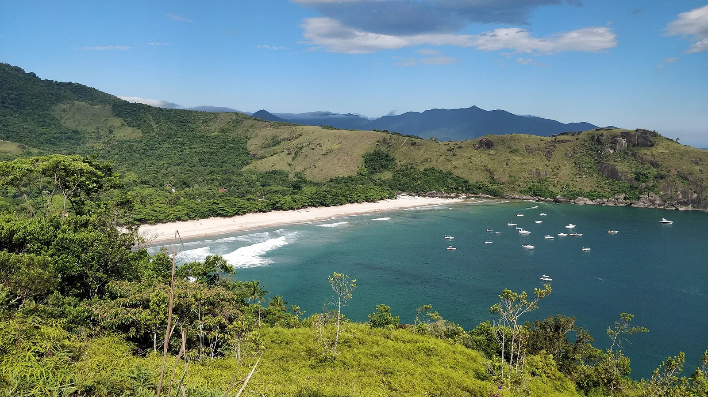

Ilhabela
São Paulo, Brésil · kayak, paddle, baignade, snorkeling, windsurf

Une grande île couverte de forêt atlantique, face au continent. Le canal abrité en fait un terrain de voile et de pagaie réputé, avec des criques accessibles seulement par l’eau.
- Lieu
- São Paulo, Brésil
- Niveau
- Débutant
- Activités
- kayak, paddle, baignade, snorkeling, windsurf
- Type d'eau
- Mer / océan
- Coordonnées
- -23.78, -45.35 (position approximative du secteur)
Dangers à connaître
- Canal très fréquenté par la navigation de plaisance.
- Vent thermique soutenu l’après-midi dans le canal.
- Moustiques borrachudos sur les plages boisées.
Le conseil d'Ocean Buddy
Pars en kayak le matin : le canal est lisse avant que le vent ne se lève.
Ouvrir dans Ocean Buddy Télécharger sur l'App Store
Source : Description historique Ocean Buddy · vérification externe en attente.